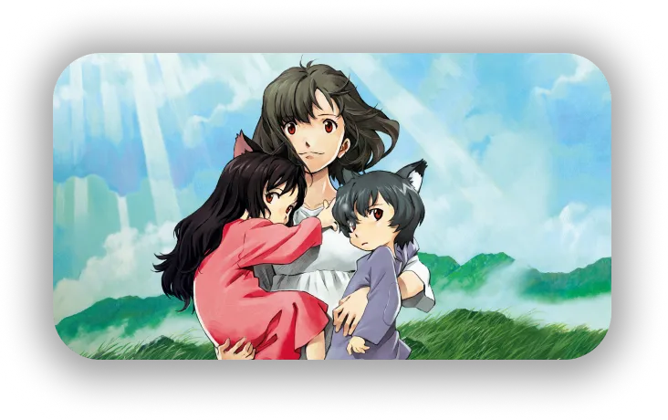

LES ENFANTS LOUPS
Un film, un mangaka
une œuvre d’art...
Mamoru Hosoda, réalisateur et animateur japonais a créé une multitude de films d’animations comme Summer Wars ou « la traversée du temps » dont le plus connu et le plus apprécié de tous, « les enfants loups ». Sorti en 2012, de pratiquement 2 heures le film a très vite reçu des prix pour son histoire originale et son animation. Le film est genré comme drame et cinéma de fantaisie.
Contrairement à ses autres films, celui-ci nous est présenté dans un Japon contemporain avec tous ses paysages, de la ville dynamique a une campagne paisible avec beaucoup de scènes qui renforce le côté réaliste du film, mais les personnages eux sont tout droit sortis d’un conte de fées. Et c’est le mixe des deux genres, réalisme et fantaisie qui caractérise ce film.
Image promotionel du film
Un concurrent pour une masterclass ?
Mamoru Hosoda a beaucoup créé de films étant comparé au studio Ghibli par la communauté, ce n’est pas étonnant quand on remarque que le réalisateur a repris les mêmes leçons comme des histoires d’amour impossible ou même des amitiés dramatiques. Pourtant, Mamoru Hosoda arrive à bien se démarquer et à proposer une histoire originale et prenante et laissant chaque minute de son film une attention extrême que ce soit par l'action, les musiques ou même l’animation. Les traits, les couleurs prises d’un panel assez simple avec des yeux ronds et des expressions bien marquées, nous plongent ainsi dans un monde féerique qui ferait tomber amoureux n’importe qui de cette ambiance.
Filmographie
2021
BELLE

2018
MIRAI MA PETITE SOEUR
2015
LE GARCON ET LA BETE
2012
LES ENFANTS LOUPS
2009
SUMMER WARS
2006
LA TRAVERSEE DU TEMPS